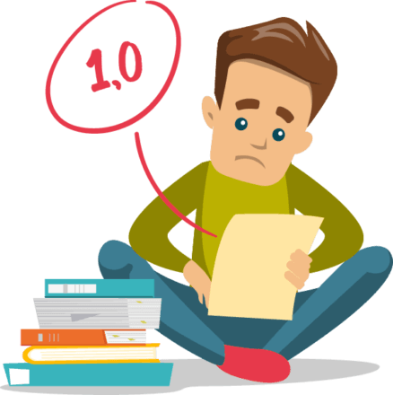

O Programa Se Liga!, instituído pela Secretaria de Estado da Educação e do Esporte do Paraná (SEED), é uma iniciativa para a recuperação da participação e aprendizagem tanto de estudantes que apresentam dificuldades em conteúdos específicos, quanto àqueles que apenas desejam melhorar as notas e o rendimento.
Fiquei no se liga porque deixei de fazer as tarefas de pensamento computacional no começo do ano e com isso vieram as notas baixas nessa matéria
não brincar durante as aulas, prestar atenção no professor, não dar atenção para os alunos que brincam durante a aula e fazer o seu
aprendi a usar o GitHub e descobri que isso pode ser muito útil para minha vida profissional e espero de verdade que esse meu trabalho mereça pelo menos 80 pontos para mim passar no se liga! (e eu ajudei 2 alunos a fazer, por isso os trabalhos ficaram parecidos com o meu.)
